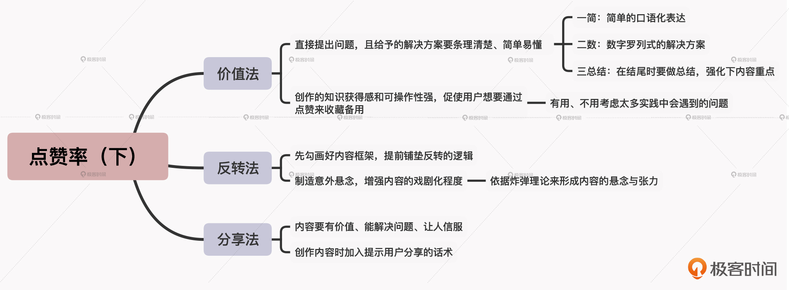

- 00 开篇词 短视频时代下，怎么把握好变现风口？.md.html
- 01 爆款短视频的底层逻辑：用心拍的短视频为啥没人看？.md.html
- 02 爆款短视频的底层逻辑：如何轻松打造自我特色？.md.html
- 03 精益创业法：如何快速跨过从0到1这道坎？.md.html
- 04 SWOT法：这么明显的个人优势你为啥就是看不到？.md.html
- 05 效用函数法：如何用量化的方式进行高效创作？.md.html
- 06 二次创新实验法：如何打造个人的差异化定位？.md.html
- 07 平台定位：如何选择最适合自己的创作平台？.md.html
- 08 如何快速找到各大短视频平台的正确切入点？.md.html
- 09 选题（上）：如何利用思考清单找到合适选题？.md.html
- 10 选题（下）：如何为不同的内容定制合适选题？.md.html
- 11 优劣分析法：如何快速筛选适合创作的视频素材？.md.html
- 12 标题（上）：如何利用微创新巧妙找到爆款标题？.md.html
- 13 标题（下）：如何用对号入座的方式抓住标题亮点？.md.html
- 14 视频封面（上）：如何快速抓住用户注意力？.md.html
- 15 视频封面（下）：如何传递最有价值的信息？.md.html
- 16 视频剪辑：如何轻松掌握视频化剪辑的三大公式？.md.html
- 17 效果反馈法：剪辑很容易，为什么你却一直学不会？.md.html
- 18 剪辑对比（上）：如何避开常见的短视频剪辑陷阱？.md.html
- 19 剪辑对比（下）：如何利用剪辑技巧提升视频质量？.md.html
- 20 拉片法：用电影创作的方式学习爆款短视频运营技巧.md.html
- 21 用户留存率：为什么粉丝很多但忠实拥趸却很少？.md.html
- 22 点赞率（上）：如何有效提升短视频的点赞量？.md.html
- 23 点赞率（下）：三种方法轻松提升用户对内容的认可度.md.html
- 24 上瘾机制：为什么视频观看量很高却没人留言？.md.html
- 25 避坑指南：为什么很多短视频账号中途做不下去了？.md.html
- 26 如何找到适合自己的短视频变现模式？.md.html
- 27 多元化变现：如何明确不同创作阶段的变现任务？.md.html
- 28 多内容变现：不同内容的主打变现模式是什么？.md.html
- 结束语 一切成大事者，都是终身学习者.md.html
- 捐赠
23 点赞率（下）：三种方法轻松提升用户对内容的认可度
你好，我是周维。上节课，我们是站在内容创作者的视角，学习了钦佩法和共鸣法两种提高内容点赞率的方法。而这节课，我们会站在用户的角度，学习如何通过价值法、反转法、分享法来提升用户对内容的认可度，从而提高作品的点赞率，并进一步提高作品成为爆款的几率。
这里可能你会有疑问了，到底怎么样才算是真正站在用户的角度呢？我之前创作内容时，每次也都是站在用户的角度去找选题和素材的，那为什么作品的点赞量还是很少呢？
说实话，我遇到过很多这样的创作者，他们也都不清楚为何自己分明按照短视频内容创作的步骤做了，却依然得不到好的反馈和回报。这里我给你举个例子，你看是不是跟你的情况差不多。
我这个朋友主打的是科技类的知识分享，每期视频会用三四分钟的时长去给用户传递一个与科技相关的知识点。按说这种能够给用户提供价值的内容，肯定是会受到欢迎的，但是这个朋友真正实施之后，得到的效果并不好，视频的播放量不高，每次点赞的人也不多。
比如，他有一期视频内容是围绕“边际效应”这个话题，讲述了由于边际效应的递减特性，当其他投入固定不变时，即使不断增加商品生产的数量，厂商实际耗费的成本也并不会增加。所以对于创业人士来说，利用好边际效应原理，就可以达成快速成功的目的。
这期视频的点赞量只有20多个，我看了下，发现问题并不是他讲得没有道理，而是由于他没有站在用户角度去展开讲述观点。整个视频中，他只是从专业的知识层面讲解了边际效应的概念，并不好理解，而且看完后用户也记不住。这样一来，用户对内容的认可度就不高，点赞的行为也就不会发生了。
所以，站在用户的角度去创作内容是非常重要的。接下来，我就带你具体看一下可以提升用户对内容认可度的三种创作方法，以此帮你提升作品的点赞率。
价值法
首先我们来看看价值法。不知你平时在刷微博的时候，是否有注意到大家经常会做的一种行为，就是转发某条微博并说“Mark一下”，也就是做个标记，用户可以从这里进去查看内容或学习，这里的“转发”其实就相当于收藏的功能。通常，这样的内容都会是一些干货知识，它会对用户某方面的能力提升或认知改变有指导作用。
所以在短视频创作中，我们同样可以通过这样的内容来吸引用户的驻足。这里的价值法，就是指通过创作对用户来说是实用且直截了当、便于再次查看的内容，让用户点赞作品来进行“收藏”，以此提高作品点赞量的方法。
我举个例子，内容创作者“职场A姐”主打的细分领域是“上班族如何正确使用办公软件的各种功能”，每期视频帮助用户解决一个具体的问题，给出一个快速、简单、易上手的解决方案。这样用户看完之后，马上就能当场操作，解决自己所遇到的小问题。
你会发现她的视频点赞量都不少，其背后的原因就是内容很实用、对用户有价值，所以才会受到用户的广泛认可。
那么，我们在采用价值法来创作短视频的时候，都需要注意什么呢？我觉得需要做到两点：
1. 直接提出问题，且给予的解决方案要条理清楚、简单易懂。
要知道，越是清晰的表达，越能降低用户的理解难度，越能提升用户对内容的认可度，赢得用户的青睐、好评。那么要如何梳理出条理清晰的内容呢？你可以按照“一简、二数、三总结”的方法来对号入座：
- 一简：即简单的口语化表达。你在给出问题的答案时，要注意把一些专业名词或是不易理解的词汇，简化、转变成生活中用户常用的口语词汇，用最简单的方式来讲给用户听。
- 二数：即数字罗列式的解决方案。实践证明，在有限的时间内要让用户能够看懂、记清给出的解决方案，数字罗列式的方法非常管用，你可以将答案分成几步然后罗列出来，这样用户就能明确地知道每一步都需要做什么，简单明了。
- 三总结：即在结尾时要做总结，强化一下内容重点。这里的总结可以是便于用户操作、记忆的小技巧，也可以是创作者自己的心得体会，有价值的总结能够促使用户更加认可内容，从而给予点赞。
2. 创作的知识获得感和可操作性强，促使用户想要通过点赞来收藏备用。
从心理学的角度来说，人会存在对自身知识量的焦虑感，而收藏有价值、易实践的内容，对用户来说就可以产生知识囤积的安全感。短视频平台的点赞功能其实就起到了收藏的作用，因此我们可以通过创作知识获得感高的内容，来促使用户想要迫不及待地收藏下来。
那什么样的内容知识获得感高、可操作性强呢？
首先，有知识获得感的内容最主要的特征就是有用。主要表现为两个方面：一方面，用户看完内容后觉得可以帮自己解决实际的问题，或者能帮自己释去心中的疑问；另一方面，用户看完内容后能够对应想象到合适的使用场景，因此现在可以先收藏起来，便于后续在使用时去随时翻看。
其次，可操作性强的内容特征就是不用考虑太多实践中会遇到的问题。请注意，短视频本身就是要快速吸引用户的注意力，那么可操作性强就意味着要降低用户阅读的门槛，创作者直接将表达的内容告诉用户即可，不用解释其中的关联或者因果关系。
给你举个例子。短视频创作者“果老师开绘”创作了一期康奈尔笔记学习法的内容，点赞量达到了100多万。视频中，他没有过多地解释这个学习方法的由来，而是着重演示了具体的学习步骤，让用户一看就觉得可以轻松学会。
反转法
我们再来看看第二种提升用户对内容认可度的创作方法：反转法。
反转其实是故事创作中的一种常见叙事手法，它是通过将组成故事结构的三大要素，即情节、人物、环境转变成相反的方向，以达到出其不意的戏剧效果。
所以在短视频创作中，所谓的反转法就是通过视听语言的叙事，来打破用户的心理期待，让内容朝着用户心里期待的相反方向发展，使得用户看到最后会产生一种“恍然大悟”或是“怎会如此”的心理状态，以此来提升作品点赞量的创作方法。
我给你举个例子。“疯狂小杨哥”是一个做搞笑内容的创作者，他的作品经常获得用户的点赞，比如说这期视频内容，点赞量有200多万，可以发现这个视频中笑点频出，而搞笑的逻辑就是通过一个接一个的意外，朝着用户内心相反的方向来推进剧情，让人看了忍俊不禁。
那么，我们在采用反转法进行内容创作时，具体应该怎么做呢？这里我给你分享两个技巧。
1. 先勾画好内容框架，提前铺垫反转的逻辑。
采用反转法，一定要记得先设置好内容框架，规划好要进行反转的地方，这样才能够真正达到出其不意、超出用户心理期待的效果。
请注意，一定不要为了反转而反转，而是要让转折成为内容中的“理所应当”。反转的出现是在之前的内容中就有了端倪的，而并非没有任何征兆。
2. 制造意外悬念，增强内容的戏剧化程度。
悬念这种创作手法很常见，因为有悬念，用户才会有好奇、有期待，才会想要把整个内容看完。著名的电影大师希区柯克在营造悬念上，也有一个最出名的方法：炸弹理论。
这个方法的逻辑是，假设有三个人在打扑克牌，在牌桌下有一颗定时炸弹，但是他们并不知情。如果你只是讲述三个人打牌，然后炸弹突然爆炸了，那么故事就毫无悬念。但如果你事先将炸弹的存在告诉给观众，然后再展示三个不知情的人打牌，那么观众就会时刻担心炸弹什么时候爆炸，或者是想知道他们如何化险为夷，或者是炸弹会不会被拿走了等等各种的可能性。
所以，我们在创作内容时要想产生反转式的效果，就可以依据这个炸弹理论来形成内容的悬念与张力，从而使用户获得优质的视觉体验，以此提升其对内容的认可度。
我给你举个例子。日常生活类的短视频创作者“阿瑶”，创作了一期整蛊男朋友的内容，视频点赞量超过193万，是她众多内容中点赞量最高的一部作品了。这期视频中，她就使用了炸弹理论的方式，来提前告诉用户都有什么样的整蛊手段，但被整蛊人物并不知情，从而制造出了一系列的内容笑料和爆点，用户在观看时也都充满了“恶作剧”的期待感，想要一探究竟。
分享法
最后，我们来说说分享法。
顾名思义，分享法就是通过分享来提升用户对内容认可度的方法。那么针对分享法，具体我们应该怎么做呢？主要有两点。
1. 内容要有价值、能解决问题、让人信服。
往往能让更多的人分享点赞的内容，自身是有价值的，可以帮助用户解决实际问题，或是能让人信服，只有这样的内容用户才愿意转发到自己的社交圈中，让自己社交圈内的朋友看到、点赞。
我们要清楚一点：用户愿意分享创作者的内容，背后的心理机制是该内容可以衬托用户在他人心中的形象。如果内容噱头很足但十分空洞，或者很冷门、低俗，其实就无法体现出分享者在朋友圈中的固有人设，因而也就没有人愿意分享。
所以我们在创作中，可以从解决某一类问题的角度入手，来让用户觉得分享出来可以展现出自己独特的品位、性格，从而提升点赞率。
2. 创作内容时加入提示用户分享的话术。
要引导用户去分享我们的内容，可以在视频的最后添加一些提醒分享的话术，比如“分享出去帮助更多的人解决XX难题”“分享也是奉献爱心”，等等。
这里我要敲下黑板了，请记得，分享话术的背后是让用户认为分享可以给自己带来什么、改变什么，也就是可以带来直接的回报，不管是精神还是物质上的，当然，更多的还是契合内心上的期许，但是这种有回报的心理反馈一定要有。
小结
今天我所讲的三种创作方法，都是站在用户的角度来提升其对内容的认可度的。这里你要记住以下几点：
- 价值法是从用户学得会、用得着的角度入手，通过创作有价值的内容，来提升用户知识获得感的一种创作方法。
- 反转法是从用户乐意接受的角度入手，以打破用户心理期待的叙事方式，来提升用户对内容的认可度。
- 分享法也是从用户用得着、提高价值的角度入手，通过在朋友圈中塑造人设，以此提升作品的点赞量。

思考题
假设你要创作一期关于理财类的视频内容，讲述的是存款准备金的相关知识，请你根据今天学习的内容，思考一下如果想要提高这期内容的点赞率，你应该怎么做呢？
欢迎在留言区分享你的答案，也欢迎你把今天的内容分享给正在学习或者创作短视频的朋友，看看他们的想法是什么。
© 2019 - 2023 Liangliang Lee. Powered by gin and hexo-theme-book.